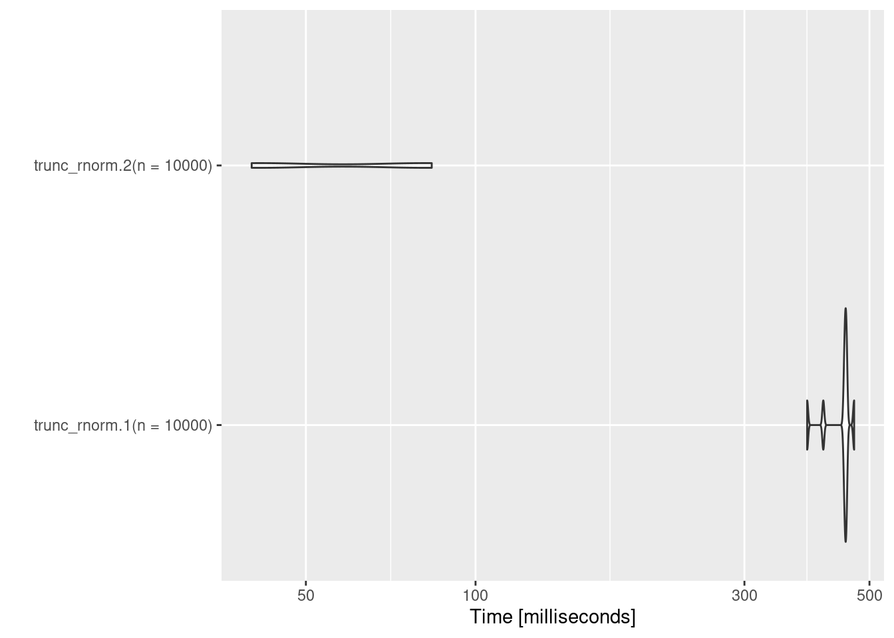
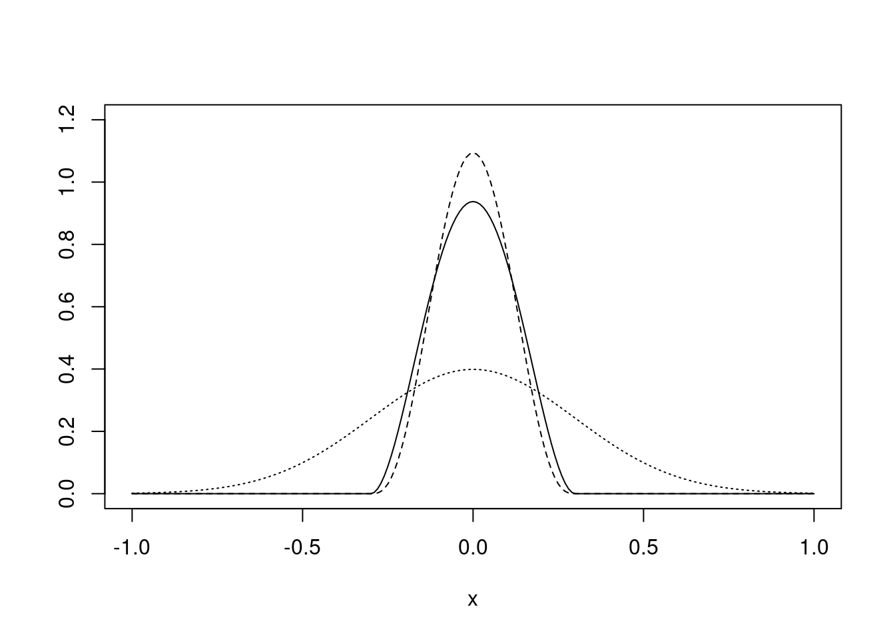
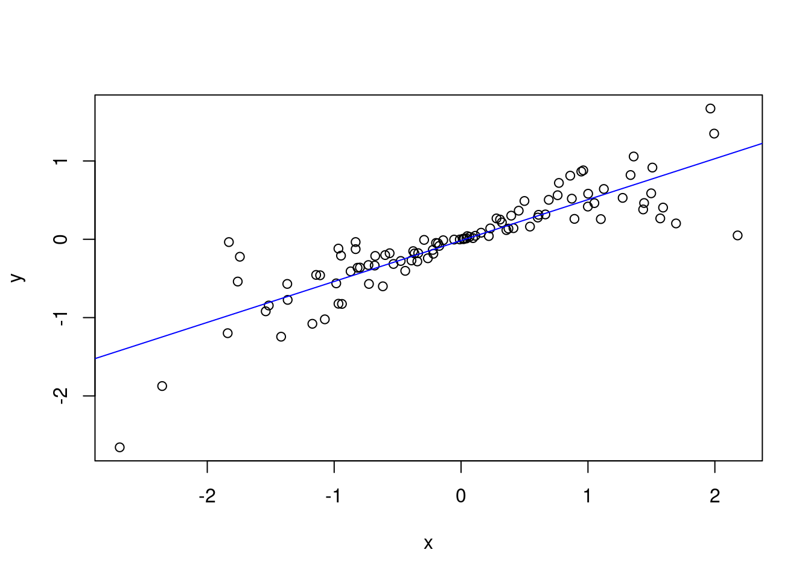
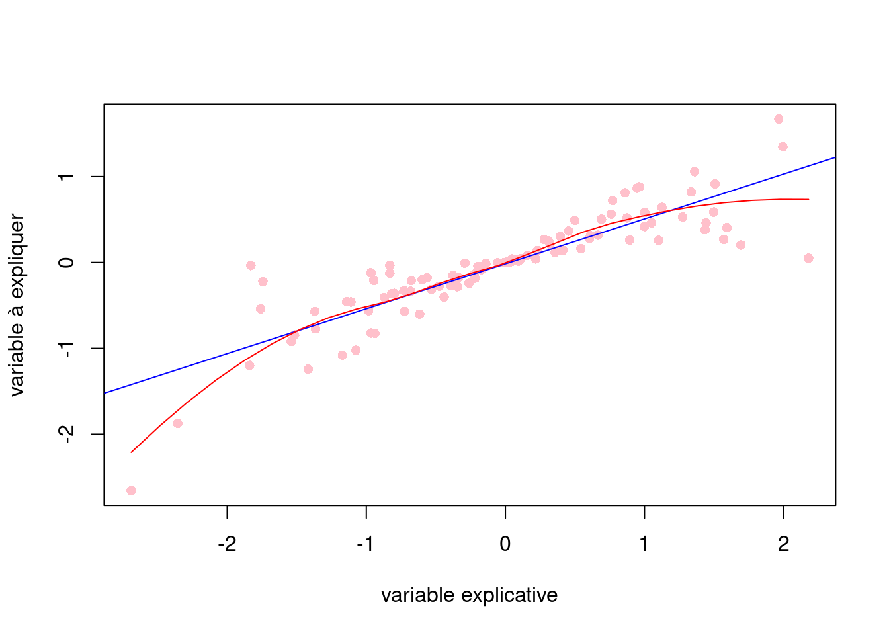
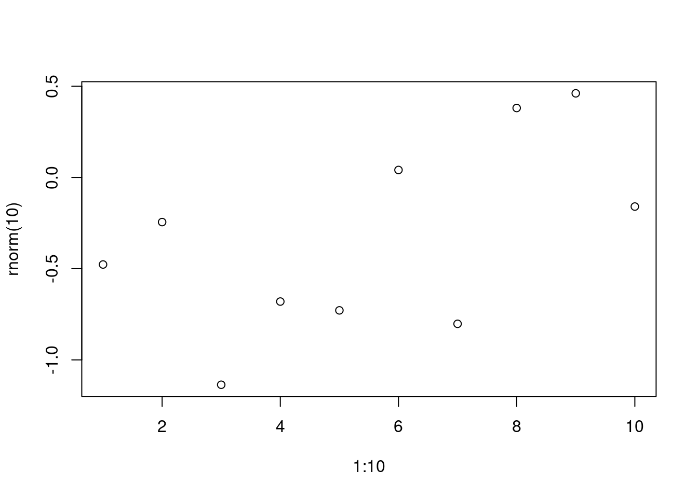

Chapitre 3 Programmation
Nous allons voir dans ce chapitre des éléments de programmation qui permettent de gagner en clarté et simplicité dans le code et parfois en temps de calcul.
Ce document a été généré directement depuis RStudio en utilisant l’outil Markdown. La version .pdf se trouve ici.
Packages à installer
install.packages((c("ggplot2", # Graphiques ggplot2
"kableExtra", # Insérer des tables dans Markdown
"Matrix", # Matrice creuse
"microbenchmark", # Temps de calcul
"pryr", # Mieux comprendre R
"Rcpp", # Faire appel à du code C++
"reticulate" # Interface vers Python
)))On montre un exemple pour utiliser du code Python. Pour cela, on aura besoin de la bibliothèque pandas:
reticulate::py_install("pandas")3.1 Quelques règles de style
R n’a pas de PEP 8 comme c’est le cas pour Python. En revanche, pour des raisons évidentes de clarté et de lisibilité pour soi-même et pour les éventuels collègues qui vont lire notre code, il est important d’essayer de respecter si possible quelques règles d’écritures de codes. On s’est inspiré ici de ces deux documents :
“Style guide”” de Hadley Wickham dans le livre “R advanced”
3.1.1 Le nom des fichiers de codes
Appeler vos fichiers de code avec l’extension .R et donner des noms clairs à vos fichiers de codes, en utilisant éventuellement le symbole underscore ou le trait d’union entre les différents mots. Par exemple :
traitement-base.R
fonctions-utiles.R
exploration.R
prediction.R3.1.2 Le nom des objets
Eviter d’appeler vos objets avec des noms de fonctions existants ou de mots clés. Le nombre de caratères devrait être restreint même si le nom doit avoir un sens pour le lecteur. On peut utiliser le symbole underscore ou le point pour séparer des mots entre eux :
arbre_reg
rf_reg
glm_reg3.1.3 Espace entre les opérateurs
Aérer au maximum les opérations (affectation, calcul, utilisation de fonctions, etc.) par des espaces :
a <- c(5, NA, 4, 3)
mean(a, na.rm = TRUE)Exception faite pour les opérateurs :, :: et ::: où il ne faut pas d’espace :
1:10
stats::lm3.1.4 Les conditions
Quand on utilise les conditions if/else, for, while :
laisser un espace après le mot clé,
l’accolade ouvrante se trouve à la fin de la ligne contenant le mot clé, l’accolande fermante se trouve sur une nouvelle ligne,
mettre deux espaces en début de ligne (indentation) à partir de la seconde ligne jusqu’à la fin de la condition,
si des conditions sont imbriquées, la nouvelle condition devrait se trouver sur la même ligne que l’accolade fermante de la première condition.
if (y < 0 && debug) {
message("Y is negative")
}if (y == 0) {
log(x)
} else {
y ^ x
}3.1.5 La taille d’une ligne
Essayer de limiter 80 caractères à une ligne de code.
3.1.6 Affectation
Pour affecter une valeur à un objet essayer d’utiliser l’opérateur <- plutôt que =.
a <- 5Remarque : sur RStudio quelques-une des règles ci-dessus sont implémentées par défaut, notamment les indentations après les boucles ou les fonctions.
Exercice 2.1
Mettre le code suivant en utilisant les règles de style présentées ci-dessus:
my_mean=function(x)
{
# verification
if(!is.numeric(x))
stop("x must be a numeric vector")
# initialization
n= length(x)
res =0
for(k in 1:n)
{
res= res+x[k]
}
# return res
return(res/ n)
} 3.2 Fixer la taille des vecteurs (si on la connaît à l’avance)
On a le problème suivant : on souhaite obtenir un vecteur de taille \(n\) contenant des valeurs simulées issues d’une loi gaussienne centrée et réduite, mais on ne souhaite garder que les valeurs supérieures à un paramètre a (égal à 0 par défaut). Dans la fonction trunc_rnorm.1() ci-dessous, nous ne précisons pas la taille du vecteur x qui sera retourné. A chaque fois qu’une valeur répond au critère, on la concatène au vecteur x en utilisant la commande c(). Le défaut de cette méthode est que R est sans arrêt en train d’allouer un nouvel espace mémoire pour le vecteur x qu’on modifie à chaque fois puisqu’on change sa taille.
trunc_rnorm.1 <- function(n, a = 0) {
x <- numeric(0)
i <- 1
while (i <= n) {
r <- rnorm(1)
if (r > a) {
x <- c(x, r)
i = i + 1
}
}
x
} C’est pourquoi lorsqu’on connaît à l’avance la taille du vecteur qu’on souhaite créer, on créé le vecteur avec la bonne taille et l’espace mémoire alloué à ce vecteur est fixée dès le début. C’est la seule différence avec la fonction trunc_rnorm.2() ci-dessous où on a précisé la taille de x dès le départ. On affecte ensuite à chaque élément de x la valeur qu’on souhaite garder.
trunc_rnorm.2 <- function(n, a = 0) {
x <- numeric(n)
i <- 1
while (i <= n) {
r <- rnorm(1)
if (r > a) {
x[i] <- r
i <- i + 1}
}
x
} On constate que les différences de temps de calcul sont assez importantes :
system.time(trunc_rnorm.1(10000))## utilisateur système écoulé
## 0.513 0.012 0.525system.time(trunc_rnorm.2(10000))## utilisateur système écoulé
## 0.052 0.000 0.0523.3 Temps de calcul et mémoire
3.3.1 Pour mesurer les temps de calcul efficacement
Si vous répétez les instructions précédentes successivement, vous constaterez que les temps de calculs sont à chaque fois différents. Ceci s’explique par le fait que les machines sur lesquelles on travaille exécutent plusieurs tâches à la fois, qui ne sont pas toujours les mêmes à l’instant \(t\). Aussi, une façon de rendre robuste ces temps de calcul est de répéter un certain nombre de fois ces mêmes commandes et de présenter ensuite les résultats statistiques sur ces temps de calcul.
Pour cela, on peut bien évidemment utiliser une boucle for ainsi et faire ensuite des statistiques de base
my_time <- data.frame(time_1 = numeric(10),
time_2 = numeric(10))
for (b in 1:10) {
my_time$time_1[b] <- system.time(trunc_rnorm.1(10000))[3]
my_time$time_2[b] <- system.time(trunc_rnorm.2(10000))[3]
}
summary(my_time)## time_1 time_2
## Min. :0.4750 Min. :0.04100
## 1st Qu.:0.4835 1st Qu.:0.04225
## Median :0.4880 Median :0.04300
## Mean :0.4930 Mean :0.04400
## 3rd Qu.:0.4920 3rd Qu.:0.04550
## Max. :0.5430 Max. :0.04900Sinon, on utilise la fonction microbenchmark() du package microbenchmark (Mersmann et al., 2019). En général, on regarde la moyenne.
mbm <- microbenchmark::microbenchmark(
trunc_rnorm.1(n = 10000),
trunc_rnorm.2(n = 10000),
times = 10L)
mbm## Unit: milliseconds
## expr min lq mean median uq
## trunc_rnorm.1(n = 10000) 387.63234 450.58393 444.56901 452.97367 455.4502
## trunc_rnorm.2(n = 10000) 40.06732 41.49308 61.54328 61.22532 81.8476
## max neval
## 469.68414 10
## 83.61398 10Par ailleurs, il est possible de représenter graphiquement ces résultats avec la fonction autoplot() du package ggplot2.
ggplot2::autoplot(mbm)
3.3.2 Pour comprendre la gestion de la mémoire
Lorsqu’on crée un vecteur sous R, celui-ci est stocké sur un espace mémoire que l’on peut identifier avec la fonction address() du package pryr (Wickham, 2019).
Par exemple :
library("pryr")##
## Attachement du package : 'pryr'## L'objet suivant est masqué depuis 'package:data.table':
##
## address## Les objets suivants sont masqués depuis 'package:purrr':
##
## compose, partialx <- numeric(10)
address(x)## [1] "0x5617589ffcb8"Lorsqu’on attribue de nouvelles valeurs à ce vecteur, l’adresse ne change pas :
for (i in 1:10) {
x[i] <- ifelse(rnorm(1) > 0, 1, 0)
print(address(x))
}## [1] "0x561758b6fac8"
## [1] "0x561758b6fac8"
## [1] "0x561758b6fac8"
## [1] "0x561758b6fac8"
## [1] "0x561758b6fac8"
## [1] "0x561758b6fac8"
## [1] "0x561758b6fac8"
## [1] "0x561758b6fac8"
## [1] "0x561758b6fac8"
## [1] "0x561758b6fac8"En revanche, si on change la taille de ce vecteur, R va systématiquement réserver un nouvel espace mémoire, ce qui est une opération coûteuse en temps calcul, d’où des temps de calcul plus long. Par exemple :
for (i in 11:20) {
x[i] <- ifelse(rnorm(1) > 0, 1, 0)
print(address(x))
}## [1] "0x561759c9f538"
## [1] "0x561759c9f488"
## [1] "0x561759c9f3d8"
## [1] "0x561759c9f328"
## [1] "0x561759c9f278"
## [1] "0x561759c9f1c8"
## [1] "0x56175942c3a0"
## [1] "0x561762fb6030"
## [1] "0x56174f8294f0"
## [1] "0x5617601c28b0"Exercice 2.2
Comparer les temps de calcul des trois expressions suivantes. Représenter graphiquement la variation des temps de calcul.
n <- 10 ^ 6
# expression 1
x <- numeric(n)
for (k in 1:n)
x[k] <- (5 == sample(1:10, 1))
mean(x)
# expression 2
x <- NULL
for (k in 1:n)
x <- c(x, (5 == sample(1:10, 1)))
mean(x)
# expression 3
x <- 0
for (k in 1:n)
x <- x + (5 == sample(1:10, 1))
mean(x)3.4 Fonction vectorisée
R est un langage interprété et de ce fait, l’exécution de boucles est coûteuse en temps calcul, contrairement à des langages compilés. Pour palier ce problème, les concepteurs du langage R ont créé de nombreuses fonctions vectorisées, c’est-à-dire qui peuvent s’appliquer à des vecteurs et qui font en général appel à des fonctions codées en C ou Fortran pour gagner en rapidité. Pour comprendre ce concept, on va comparer les deux méthodes suivantes dont le but est de calculer la somme des éléments d’un vecteur simulée selon une loi \(\mathcal{N}(0,1)\).
- Méthode 1 : on utilise des boucles depuis R
vec <- rnorm(1000000)
my_sum <- function(x) {
res <- 0
for (k in seq_along(vec)) {
res <- res + vec[k]
}
return(res)
}- Méthode 2 : on utilise la fonction sum() sur un vecteur. Cette dernière va bien entendu effectuer une boucle, mais elle sera effectuée en langage compilé, donc plus rapidement.
microbenchmark::microbenchmark(
my_sum(vec),
sum(vec),
times = 10L)## Unit: microseconds
## expr min lq mean median uq max neval
## my_sum(vec) 70359.05 70805.562 72186.157 71397.803 72500.110 77398.049 10
## sum(vec) 976.48 986.132 1024.114 1003.488 1067.377 1107.622 10Remarque : il existe de nombreuses fonctions de base qui sont vectorisées et qui permettent de gagner en temps de calcul et on les utilise souvent sans s’en rendre compte. Par exemple, les fonctions log(), cos(), exp(), etc. Dès lors qu’on est amener à faire des boucles, cela peut valoir le coup de se poser la question : est-ce qu’il n’existe pas de fonctions prédéfinies et vectorisées qui feraient déjà ce qu’on souhaite faire, en un temps plus rapide.
Exercise 2.3
Ecrire la fonction my_sd() qui calcule l’écart-type d’un vecteur numeric. La fonction ne pourra pas faire appel ni à la fonction sum() ni mean() et ne pourra avoir qu’une seule boucle. Comparer les temps de calcul avec sd().
3.5 Ecrire un code en C++
Lorsqu’on a identifié certaines parties d’un code qui sont coûteuses en temps calcul, il peut être intéressant de coder ces parties sous formes de fonctions écrites en C++ et d’appeler ensuite ces fonctions depuis R.
Par exemple, on va convertir la fonction my_sum() écrite en R en code C++. On présente ci-dessous le code inclus dans le fichier sumcplusplus.cpp.
#include <Rcpp.h> // pour utiliser des fonctions de base
using namespace Rcpp;
// La commande suivante permet d'appeler ensuite les fonctions
// crées depuis R
// [[Rcpp::export]]
// début de la function
double sum_rcpp(NumericVector x) {
double res = 0;
int n = x.size();
for(int i = 0; i < n; i++) {
res = res + x(i);
}
return res;
}L’algorithme utilisé dans la fonction sum_rcpp() présente la même syntaxe que la fonction my_sum() écrite en R. Par contre, il faut utiliser les particularités du langage C++. Parmi ces particularités :
il faut définir le type de l’objet qui sera retourné par la fonction,
de manière générale, il faut définir le type de tous les objets créés et/ou utilisés. En effet, on a du définir le type de tous les paramètres d’entrée. Même dans la boucle for, on a définir le type de i qui sert d’incrément,
les lignes de code se terminent par le point virgule,
l’opérateur d’affectation est le symbole =,
la boucle for s’utilise différemment que du code R,
pour connaître la taille d’un vecteur, on a utilisé la méthode .size() qui retourne un entier,
l’indexation du vecteur commence à 0 et on utiliser les parenthèses pour accéder à un élément du vecteur.
Une fois la fonction écrite, il faut la charger sous R. Pour cela, on utilise la fonction sourceCpp() du package Rcpp (Eddelbuettel et al., 2019) qui est le package R le plus utilisé par d’autres packages.
require("Rcpp")
sourceCpp("R/sumcplusplus.cpp")On peut ensuite appeler directement la fonction créée :
sum_rcpp(vec)## [1] 270.4123Depuis R Markdown, il est possible d’insérer du code écrit C++ directement à l’intérieur d’un chunk. Pour cela, il suffit de cliquer depuis RStudio sur l’onglet “Insert,” puis “Rcpp” et cela aura pour effet d’insérer une balise de code qui sera compilée au moment de son évaluation (autrement dit, sourceCpp() est automatiquement exécutée).
Si on compare les temps de calcul avec my_func() et la fonction sum(), on constate que sum_rcpp() est presque 20 fois plus rapides que my_sum() et 4 fois plus lentes que sum().
microbenchmark::microbenchmark(
my_sum(vec),
sum(vec),
sum_rcpp(vec),
times = 10L)## Unit: microseconds
## expr min lq mean median uq max
## my_sum(vec) 69689.651 69825.396 70915.932 70436.3255 71291.139 74511.302
## sum(vec) 975.490 978.049 1165.809 997.3865 1067.974 2483.762
## sum_rcpp(vec) 3890.062 3922.382 4156.705 4001.0020 4032.852 5802.086
## neval
## 10
## 10
## 10Pour en savoir plus sur l’utilisation de code C++ depuis R, on recommande le document suivant : http://adv-r.had.co.nz/Rcpp.html
Exercise 2.4
Ecrire la fonction my_sd_cpp() en C++ qui calcule l’écart-type d’un vecteur numeric. Comparer les temps de calcul avec sd().
Remarque : en C++, on utilise pow(a, b) pour calculer \(a^b\)
3.6 Insérer du code Python dans un document Markdown
Il est possible d’exécuter du code Python dans un document R Markdown et d’importer ensuite les objets créés sous R pour les utiliser.
Pour cela, il suffit de cliquer depuis RStudio sur l’onglet Insert, puis Python et cela aura pour effet d’insérer une balise de code Python
```{python}
```Par exemple, on va executer les lignes de commande Python suivantes dans lesquelles on a créé l’objet flights :
import pandas
flights = pandas.read_csv("http://www.thibault.laurent.free.fr/cours/R_avance/flights.csv")
flights = flights[flights['Dest'] == "TPA"]
flights = flights[['UniqueCarrier', 'DepDelay', 'ArrDelay']]
flights = flights.dropna()Pour rappatrier l’objet Python dans R, il suffit ensuite d’utiliser la commande py$ du package reticulate (Ushey et al., 2019) suivi de l’objet à rappatrier :
library("reticulate")
library("ggplot2")
ggplot(py$flights, aes(UniqueCarrier, ArrDelay)) +
geom_point() +
geom_jitter()3.7 Eviter si possible les boucles (apply(), lapply(), replicate(), colSums(), etc.)
On va parler ici des fonctions apply(), lapply, sapply(), mapply(), tapply(). Les différences en temps de calcul ne sont pas significatives par rapport à l’utilisation de boucles, dans la mesure où implicitement, ces fonctions font le même travail que les boucles. L’idée de ces fonctions est de réduire le nombre de lignes de code qu’on utiliserait en faisant des boucles à la place.
On va voir qu’on utilise une de ces fonctions plutôt qu’une autre selon le type de l’objet considéré en entrée et selon le type d’objets que l’on souhaite en sortie. On verra également la fonction replicate() qui utilise les propriétés de la fonction sapply(), mais pour un usage un peu différent.
On présentera également les fonctions colSums(), rowSums(), colMeans(), rowMeans() qui sont plus performantes qu’utiliser la fonction apply() car elles sont vectorisées.
3.7.1 apply() pour les matrix/array
Une matrix est une forme particulière d’un array. Une matrix posssède deux dimensions (espace des lignes et espace des colonnes), un array peut avoir autant de dimensions que souhaitées. Les \(D\)-dimensions sont données sous forme d’un vecteur de taille \(D\), chaque élément \(i\) donnant la taille de la dimension \(i\). En général, on utilise peu les array à plus de 3 dimensions. Une caractéristique d’un array est que tous ses éléments sont du même type : numeric, integer, logical, character (rarement complex).
Commençons par créer un array à trois dimensions de taille \(3 \times 2 \times 2\). Pour simplifier la compréhension d’un array, on va donner des noms à chaque composante de chaque dimension. La 1ère dimension correspondra aux nom des individus, la 2ème celle des variables, la 3ème celle des années :
tab <- array(c(100, 90, 110, 25, 24, 28, 175, 180, 190, 68, 74, 85),
dim = c(3, 2, 2))
dimnames(tab)[[1]] <- c("Luc", "Pierre", "Pedro")
dimnames(tab)[[2]] <- c("taille", "poids")
dimnames(tab)[[3]] <- c("2000", "2010")
tab## , , 2000
##
## taille poids
## Luc 100 25
## Pierre 90 24
## Pedro 110 28
##
## , , 2010
##
## taille poids
## Luc 175 68
## Pierre 180 74
## Pedro 190 85La fonction apply() permet de faire des calculs :
- sur une seule dimension. On précise alors le numéro de la dimension dans le deuxième argument et le troisième argument correspond à la fonction qu’on souhaite appliquer sur chaque élément appartenant à cette dimension. Dans ce cas, le résultat est un vecteur de longueur la taille de la dimension choisie. Par exemple, si on souhaite faire la moyenne des éléments en considérant la 2ème dimension.
apply(tab, 2, mean)## taille poids
## 140.83333 50.66667Remarque : en réalité, selon la fonction qu’on applique à apply(), le résultat n’est pas forcément un vecteur. Essayer par exemple de remplacer la fonction mean() par range() dans l’exemple ci-dessus.
Equivalent avec les boucles : si on avait utilisé les boucles plutôt que la fonction apply(), on aurait utilisé le code suivant :
res <- numeric(dim(tab)[2])
for (k in seq_along(res))
res[k] <- mean(tab[, k, ])
res## [1] 140.83333 50.66667- sur deux dimensions :
apply(tab, c(2, 3), mean)## 2000 2010
## taille 100.00000 181.66667
## poids 25.66667 75.66667Equivalent avec les boucles : si on avait utilisé les boucles pour faire ce calcul, on aurait fait :
res <- array(0, dim = dim(tab)[c(2, 3)])
for (i in 1:dim(tab)[2])
for (j in 1:dim(tab)[3])
res[i, j] <- mean(tab[, i, j])
res## [,1] [,2]
## [1,] 100.00000 181.66667
## [2,] 25.66667 75.666673.7.2 Les fonctions colSums(), rowSums(), colMeans(), rowMeans()
Ces fonctions sont équivalentes à la fonction apply() en utilisant FUN=sum ou FUN=mean et en appliquant les bonnes dimensions (1 pour lignes, 2 pour colonnes), mais sont plus rapides car elles ont été codées en langage compilé.
Pour comparer les temps de calcul :
x <- matrix(runif(10e6), nc = 5)
microbenchmark::microbenchmark(
apply(x, 2, mean),
colMeans(x),
times = 10L)## Unit: milliseconds
## expr min lq mean median uq max
## apply(x, 2, mean) 182.67173 199.21078 235.71830 199.42661 200.10109 576.76999
## colMeans(x) 11.26868 11.31742 11.44444 11.42105 11.55452 11.70631
## neval
## 10
## 103.7.3 La fonction lapply()
Même si la fonction lapply() s’applique aussi bien sur les vecteurs que les list, on présentera ici son utilisation pour les list/data.frame. L’intérêt de l’appliquer sur des vecteurs sera présenté avec la fonction replicate().
On rappelle ici qu’une list est caractérisée par un certain nombre d’éléments pouvant être de types différents. On accède aux éléments d’une liste par le symbole $ suivi du nom de l’élément de la liste et s’il n’y a pas de nom, on y accède avec les doubles crochets avec l’indice de l’élément auquel on souhaite accèder. Un data.frame est une forme particulière d’une list dans la mesure où les éléments peuvent être vus comme étant les variables (on y accède avec le symbole $).
La fonction lapply() consiste à appliquer la même opération sur chaque élément de la list. Cette opération pouvant être donnée par une fonction de base de R ou bien pouvant être une fonction programmée.
On considère le jeu de données mtcars accessible par défaut sous R et contenant un certaine nombre de variables sur des moteurs de voitures de différentes marques. Pour connaître les caractéristiques moyennes, on applique la fonction mean() à chaque élément de mtcars, autrement dit à chaque variable. Le résultat est retourné sous forme de list de même longeur que la list de départ.
Ici, on a utilisé la fonction unlist() sur le résultat retourné afin de présenter le résultat sous forme d’un vecteur, plus lisible à lire :
unlist(lapply(mtcars, mean))## mpg cyl disp hp drat wt qsec
## 20.090625 6.187500 230.721875 146.687500 3.596563 3.217250 17.848750
## vs am gear carb
## 0.437500 0.406250 3.687500 2.812500Cette fonction nous permet ainsi d’éviter de faire la boucle suivante :
res <- numeric(length(mtcars))
for (k in seq_along(res))
res[k] <- mean(mtcars[[k]])
res## [1] 20.090625 6.187500 230.721875 146.687500 3.596563 3.217250
## [7] 17.848750 0.437500 0.406250 3.687500 2.8125003.7.4 La fonction sapply()
On a vu que la fonction lapply() retournait une list. Or, si on sait par avance que le résultat retourné pour chaque élément de la liste sera identique pour chaque élément, la fonction sapply() va concaténer les résultats de chaque élément sous forme d’un vecteur ou d’un tableau. Si on reprend l’exemple précédent :
sapply(mtcars, mean)## mpg cyl disp hp drat wt qsec
## 20.090625 6.187500 230.721875 146.687500 3.596563 3.217250 17.848750
## vs am gear carb
## 0.437500 0.406250 3.687500 2.812500On présente ici un autre exemple où on va créer notre propre fonction qui consiste à retourner, le minimum, le maximum, la moyenne, l’écart-type et la moyenne de chaque élément. On code la fonction suivante où l’argument x sera interpété comme représentant un élément de la list.
f <- function(x)
c(min = min(x), max = max(x), mean = mean(x), med = median(x), sd = sd(x))On applique ensuite la fonction f() à chaque élément de la list avec la fonction sapply(). On transpose le résultat car c’est en général ainsi que sont présentées les statistiques descriptives des variables :
t(sapply(mtcars, f))## min max mean med sd
## mpg 10.400 33.900 20.090625 19.200 6.0269481
## cyl 4.000 8.000 6.187500 6.000 1.7859216
## disp 71.100 472.000 230.721875 196.300 123.9386938
## hp 52.000 335.000 146.687500 123.000 68.5628685
## drat 2.760 4.930 3.596563 3.695 0.5346787
## wt 1.513 5.424 3.217250 3.325 0.9784574
## qsec 14.500 22.900 17.848750 17.710 1.7869432
## vs 0.000 1.000 0.437500 0.000 0.5040161
## am 0.000 1.000 0.406250 0.000 0.4989909
## gear 3.000 5.000 3.687500 4.000 0.7378041
## carb 1.000 8.000 2.812500 2.000 1.6152000Par ailleurs, pour insérer une table dans un document Markdown, on peut utiliser la fonction kbl() du package kableExtra dont on verra d’autres exemples dans le chapitre sur la visualisation de données.
kableExtra::kbl(t(round(sapply(mtcars, f), 3))) | min | max | mean | med | sd | |
|---|---|---|---|---|---|
| mpg | 10.400 | 33.900 | 20.091 | 19.200 | 6.027 |
| cyl | 4.000 | 8.000 | 6.188 | 6.000 | 1.786 |
| disp | 71.100 | 472.000 | 230.722 | 196.300 | 123.939 |
| hp | 52.000 | 335.000 | 146.688 | 123.000 | 68.563 |
| drat | 2.760 | 4.930 | 3.597 | 3.695 | 0.535 |
| wt | 1.513 | 5.424 | 3.217 | 3.325 | 0.978 |
| qsec | 14.500 | 22.900 | 17.849 | 17.710 | 1.787 |
| vs | 0.000 | 1.000 | 0.438 | 0.000 | 0.504 |
| am | 0.000 | 1.000 | 0.406 | 0.000 | 0.499 |
| gear | 3.000 | 5.000 | 3.688 | 4.000 | 0.738 |
| carb | 1.000 | 8.000 | 2.812 | 2.000 | 1.615 |
Remarque : si on on souhaite appliquer la fonction f() pour les éléments qui sont de type numeric et la fonction table() pour les éléments de type factor, alors la fonction sapply() retournera le même résultat que la fonction lapply(), à savoir une list, car les résultats retournés pour chaque élément ne seront pas les mêmes :
sapply(iris, function(x){
if (is.numeric(x))
f(x)
else
table(x)
})## $Sepal.Length
## min max mean med sd
## 4.3000000 7.9000000 5.8433333 5.8000000 0.8280661
##
## $Sepal.Width
## min max mean med sd
## 2.0000000 4.4000000 3.0573333 3.0000000 0.4358663
##
## $Petal.Length
## min max mean med sd
## 1.000000 6.900000 3.758000 4.350000 1.765298
##
## $Petal.Width
## min max mean med sd
## 0.1000000 2.5000000 1.1993333 1.3000000 0.7622377
##
## $Species
## x
## setosa versicolor virginica
## 50 50 503.7.5 La fonction replicate()
On va partir de l’exemple suivant : on souhaitre simuler 5 échantillons de taille 10 distribués selon une loi uniforme \(U_{[0,1]}\).
- La première solution serait de faire une boucle :
res <- vector("list", 5)
for (k in 1:5)
res[[k]] <- runif(10)- La deuxième solution consiste à appliquer la fonction lapply() sur un vecteur quelconque de taille 5 (ici, le plus simple est de faire 1:5, mais on aurait pu prendre n’importe quel vecteur de taille 5) et de lui appliquer une fonction qui retourne un vecteur simulé selon une \(U_{[0,1]}\). Un vecteur est donc considéré ici comme une liste où chaque élément du vecteur serait un élement d’une liste.
res <- lapply(1:5, function(x) runif(10))Remarque : dans le deuxième argument, la fonction qu’on va appliquer sur chaque élément d’une vecteur prend comme argument d’entrée x (un élément du vecteur), mais on ne l’utilise pas à l’intérieur de la fonction, car on n’en a pas besoin pour faire ce qu’on souhaite faire.
- La troisième solution consiste à utiliser la fonction replicate(), qui comme la fonction sapply() va retourner le résultat sous une forme plus simplifiée qu’une list :
res <- replicate(5, runif(10))Remarque : la fonction replicate() fait précisément appel à la fonction sapply(). Pour cela, elle créé un vecteur de 0L de taille le premier argument de replicate().
3.7.6 La fonction mapply()
Pour illustrer cette fonction, on considère 5 échantillons de taille 10 issus d’une loi \(U_{[0,1]}\). Pour calculer la moyenne par échantilon, on peut utiliser la fonction lapply() :
xs <- replicate(5, runif(10), simplify = FALSE)
lapply(xs, mean)## [[1]]
## [1] 0.4200745
##
## [[2]]
## [1] 0.4105398
##
## [[3]]
## [1] 0.363235
##
## [[4]]
## [1] 0.5592183
##
## [[5]]
## [1] 0.4279419A présent, supposons qu’on souhaite pondérer les moyennes par un vecteur de poids qui est différent selon chaque échantillon. On créé ici les poids associés à chaque échantillon sous forme d’une liste :
ws <- replicate(5, rpois(10, 5) + 1, simplify = FALSE)Une façon de faire avec des boucles serait la suivante :
res <- numeric(length(xs))
for (k in seq_along(res))
res[k] <- sum(xs[[k]] * ws[[k]]) / sum(ws[[k]])
res## [1] 0.3918269 0.4219046 0.3278862 0.5367989 0.4524113Le problème de la fonction lapply() est qu’on ne peut pas appliquer une fonction sur deux list simultanément. C’est ce que fait la fonction mapply() qui prend comme 1er argument d’entrée une fonction à appliquer sur les éléments d’autant de list que l’on souhaite. La fonction qu’on applique contient donc deux arguments d’entrée x et y qui correspondent aux éléments de chacune des deux listes :
mapply(function(x, y) sum(x * y) / mean(y), xs, ws)## [1] 3.918269 4.219046 3.278862 5.367989 4.5241133.7.7 La fonction tapply()
On considère les deux vecteurs suivants :
(taille <- c(rnorm(5, 165, 10), rnorm(5, 175, 10)))## [1] 141.7006 181.0656 164.2458 177.7004 174.7507 165.0026 180.6391 179.8185
## [9] 170.9057 177.5540(sexe <- rep(c("M", "F"), each = 5))## [1] "M" "M" "M" "M" "M" "F" "F" "F" "F" "F"On souhaite calculer la moyenne dans chaque sous-groupe “M” et “F”. Une façon de faire est de créer une list contenant deux éléments, le premier correspondant au vecteur de taille du sous-groupe “M” et le second correspondant au vecteur de taille du sous-groupe “F”. C’est ce que fait la fonction split() ci-dessous :
(res.split <- split(taille, sexe))## $F
## [1] 165.0026 180.6391 179.8185 170.9057 177.5540
##
## $M
## [1] 141.7006 181.0656 164.2458 177.7004 174.7507Ensuite, il suffit d’appliquer la fonction sapply() à cette list :
sapply(res.split, mean)## F M
## 174.7840 167.8926La fonction tapply() permet de faire ce calcul en une seule ligne :
tapply(taille, sexe, mean)## F M
## 174.7840 167.8926Remarque : la fonction tapply() ne s’appliquant que sur des vecteurs, la fonction by() permet de généraliser la fonction tapply() aux data.frame.
Exercise 2.5
Créer deux fonctions mean_rnorm.1() et mean_rnorm.2() qui prennent en entrée les paramètres n et p. Ces fonctions permettent de simuler n échantillons de taille p de lois normales centrées réduites et retournent pour chaque échantillon la moyenne. mean_rnorm.1() utilisera des boucles, mean_rnorm.2() la fonction replicate().
Comparer les temps de calcul de ces 2 fonctions.
3.8 Améliorer ses fonctions
3.8.1 Créer des sous-fonctions
Il ne faut pas hésiter à créer des petites fonctions qui peuvent être
locales si elles ne sont utilisées qu’à l’intérieur d’une seule fonction principale
globales si elles ont à vocation d’être uilisées dans plusieurs fonctions.
Supposons par exemple qu’on souhaite calculer une densité non paramétrique de la densité en utilisant un des noyaux suivants :
noyau biweight \(K(x) = \frac{15}{16}(1-(\frac{x}{h})^2)^21_{(\frac{x}{h})^2\leq 1}\)
noyau triweight \(K(x) = \frac{35}{32}(1-(\frac{x}{h})^2)^31_{(\frac{x}{h})^2\leq 1}\)
noyau gaussien \(K(x) = \frac{1}{\sqrt{2\pi}}\exp(-0.5(\frac{x}{h})^2))\)
où h est le paramètre de lissage. Dans un premier temps, pn peut alors programmer une fonction par noyau :
biweight <- function(x, h) {
return(15 / 16 * (1 - (x / h) ^ 2) ^ 2 * ifelse((x / h) ^ 2 <= 1, 1, 0))
}
triweight <- function(x, h) {
return(35 / 32*(1 - (x / h) ^ 2) ^ 3 * ifelse((x / h) ^ 2 <= 1, 1, 0))
}
gaussian <- function(x, h) {
return(1 / sqrt(2 * pi) * exp(-0.5 * (x / h) ^ 2))
}3.8.2 Structure de contrôle
Les structures de contrôle classiques (for, while, repeat, if/else) sont bien entendu disponibles dans R (voir les document “Pour se donner un peu d’R” et “Introduction à R”. Nous nous intéressons ici à la notion d’aiguillage (fonction switch()) moins couramment utilisée bien que très pratique.
Celle-ci permet d’éviter d’emboîter des if/else lorsqu’on a plusieurs options possibles. Supposons par exemple qu’on souhaite calculer une densité non paramétrique de la densité en utilisant un des noyaux suivants :
noyau biweight \(K(x) = \frac{15}{16}(1-(\frac{x}{h})^2)^21_{(\frac{x}{h})^2\leq 1}\)
noyau triweight \(K(x) = \frac{35}{32}(1-(\frac{x}{h})^2)^31_{(\frac{x}{h})^2\leq 1}\)
noyau gaussien \(K(x) = \frac{1}{\sqrt{2\pi}}\exp(-0.5(\frac{x}{h})^2))\)
où h est le paramètre de lissage. On peut alors programmer sous R la fonction f_noyau() suivante, prenant en entrée les arguments x, h et type où type est un caractère prenant les valeurs “bi”, “tri” et “gauss”.
3.8.2.1 Solution avec if/else
La façon traditionnelle pour gérer différents cas de figure est d’utiliser les conditions if/else :
f_noyau <- function(x, h, type = "bi") {
if (type == "bi") {
biweight(x, h)
} else {
if (type == "tri") {
triweight(x, h)
} else {
gaussian(x, h)
}
}
}Un inconvénient est qu’en emboîtant des conditions if/else, on peut alors vite se perdre dans la lecture du code.
3.8.2.2 Solution avec switch()
La fonction switch() s’applique sur l’argument type et on donne ensuite pour chaque valeur possible de type le type de calcul à effectuer. On ajoute ici un cas qui correspondrait à toutes autres valeurs de type.
f_noyau.2 <- function(x, h, type = "bi") {
switch(type, bi = biweight(x, h),
tri = triweight(x, h),
gauss = gaussian(x, h),
"Préciser une autre valeur de type")
}Application :
x <- seq(-1, 1, 0.01)
plot(x, f_noyau.2(x, 0.3, type = "bi"), type = "l", ylab = "", ylim = c(0, 1.2))
lines(x, f_noyau.2(x, 0.3, type = "tri"), lty = 2)
lines(x, f_noyau.2(x, 0.3, type = "gauss"), lty = 3)
f_noyau.2(x, 0.3, type = "unif")## [1] "Préciser une autre valeur de type"3.8.3 Fonction stopifnot()
On connaît la fonction stop() qui s’insère en général à l’intérieur des conditions if/else.
La fonction stopifnot() permet de tester simultanément plusieurs conditions et évite donc d’avoir recours aux if/else. Elle est particulièrement utile à l’intérieur d’une fonction pour, par exemple, vérifier la conformité des valeurs passées en paramètres. Un exemple d’uitlisation :
stopifnot(1 < 2, length(1:2) == 2, pi < 2, cos(pi) > 3)## Error: pi < 2 n'est pas TRUESi plusieurs conditions ne sont pas respectées, c’est la première non respectée qui est renvoyée comme source de l’erreur.
Exercise 2.6
Modifier la fonction f_noyau.2() définie précédemment pour vérifier que :
le paramètre x est numeric
h est de taille 1 et de type numeric
type est une chaîne de caractères (on supprimera la possibilité de passer un entier pour choisir le type).
3.8.4 Les arguments dans une fonction
3.8.4.1 Supprimer les paramètres inutiles
Dans l’exemple ci-dessous, les paramètres d et e ne sont pas utilisés dans la fonction et pourtant ils ont un coût de stockage et un coût en temps de calcul car ils sont évalués par défaut dans la fonction.
f_1 <- function(a = 5, b = 4, d = 3, e = 1)
(a + b)^2On compare les temps de calcul avec la même fonction mais qui n’utilise pas les paramètres inutilisés :
f_2 <- function(a = 5, b = 4)
(a + b)^2microbenchmark::microbenchmark(
f_1(),
f_2()
)## Unit: nanoseconds
## expr min lq mean median uq max neval
## f_1() 488 517.5 25910.17 561.0 747.5 2521986 100
## f_2() 370 413.0 32083.49 443.5 582.0 3156845 100Contrairement à d’autres langages, R ne signale pas les paramètres qui ne sont pas utiles, qu’il s’agisse de paramètres utilisés en argument d’entrée ou de paramètres créés à l’intérieur de la fonction. C’est donc à celui qui programme d’être vigilent à ne pas créer des paramètres inutiles.
3.8.4.2 Utiliser des fonctions comme argument d’entrée
On a vu dans la section précédente que la fonction lapply() avait dans ses argument d’entrée une fonction. On peut si on le souhaite créer nos propres fonctions qui ont comme argument d’entrée une fonction. Dans l’exemple suivant, on applique une fonction choisie par l’utilisateur sur un échantillon simulée selon une loi uniforme :
randomise <- function(f) f(runif(1e3))Pour l’utiliser, on remplace l’argument f par le nom de la fonction qui nous intéresse :
randomise(mean)## [1] 0.4924948randomise(mean)## [1] 0.5048686randomise(sum)## [1] 496.28823.8.4.3 Utiliser des fonctions comme argument de sortie
Il est également possible de faire retourner une fonction par une fonction. C’est ce que fait la fonction f_power() ci-dessous :
f_power <- function(exponent)
function(x) x^exponent Pour utiliser cette fonction :
f_power(2)(1:5)## [1] 1 4 9 16 25f_power(3)(1:5)## [1] 1 8 27 64 125On peut également créer les fonctions f_square() et f_cube() à partir de la fonction f_power() :
f_square <- f_power(2)
f_cube <- f_power(3)
class(f_square)## [1] "function"class(f_cube)## [1] "function"Et pour obtenir le calcul souhaité :
f_square(1:5)## [1] 1 4 9 16 25f_cube(1:5)## [1] 1 8 27 64 1253.8.4.4 Utiliser les … comme argument d’entrée
Lorsqu’un utilisateur définit une fonction, il peut permettre à sa fonction d’utiliser toutes les options d’une autre fonction sans les lister une à une. Prenons l’exemple de la fonction plot_reg() définie ci-dessous.
plot_reg <- function(x, y, np = TRUE, ...) {
plot(y ~ x, ...)
abline(lm(y ~ x), col = "blue")
if (np) {
np.reg <- loess(y ~ x)
x.seq <- seq(min(x), max(x), length.out = 25)
lines(x.seq, predict(np.reg, x.seq), col = "red")
}
}L’utilisation de la syntaxe … permet de préciser que la fonction plot_reg() pourra, si besoin, faire appel à n’importe quelle option de la fonction plot().
Pour illustrer la chose, exécuter les instructions suivantes.
x <- rnorm(100)
y <- x*runif(100)plot_reg(x, y, np = FALSE)
plot_reg(x, y, pch = 16, col = "pink",
xlab = "variable explicative", ylab = "variable à expliquer")
Exercice 2.7
Q1 Que fait la fonction plot_reg() ?
Q2 Ecrire une fonction hist_extrm() qui prend en argument d’entrée un entier n, un entier B et … qui correspondra aux options utilisées dans la fonction hist(). Cette fonction devra mettre en oeuvre l’algorithme ci-dessous :
Répèter B fois l’opération suivante :
- simulation d’un vecteur x de taille n selon une \(N(0,1)\),
Résultat On comptabilise sur les B boucles le pourcentages de boucles où il existe au moins un élément de x supérieur en valeur absolue à 1.96. On stockera les valeurs concernées et on représentera l’histogramme des valeurs extrêmes.
3.9 A quoi servent les fonctions substitute()/quote() et eval() ?
On considère l’exemple ci-dessous :
a <- 5
identical(a, "a") ## [1] FALSEa et “a” sont bien entendu deux entités différentes. a est un objet qui pointe sur la valeur 5 alors que “a” est une chaîne de caractère.
Losqu’on charge une librairie, on a la possibilité d’utiliser les deux commandes suivantes :
require("tidyverse")
require(tidyverse)Dans le deuxième cas, tidyverse (sans guillemet) n’est a priori pas un objet (à moins qu’au cours d’une session on ait créé un objet avec ce nom). C’est donc qu’il a été interprété comme étant quelque chose de différent d’un objet.
3.9.1 Les fonctions quote() et substitute()
Les fonctions quote() et substitute() permettent de capturer une instruction sans l’évaluer. Pour généraliser, on va appeler cette capture une expression. La différence entre eval() et substitute() est décrite dans le chapitre Non-standard evaluation de l’ouvrage d’Hadley Wickham, mais pour résumer quote() ne fait que retourner l’expression qu’on lui donne en entrée alors que substitute est un peu plus complexe.
quote(1:10)## 1:10quote(f(1:10))## f(1:10)quote(f(x))## f(x)quote(f(x + y^2))## f(x + y^2)substitute(1:10)## 1:10substitute(f(1:10))## f(1:10)substitute(f(x))## f(x)substitute(f(x + y^2))## f(x + y^2)Une fois qu’on a fait cette capture de code, le but est d’évaluer cette expression dans un environnement spécifique et au moment où on le souhaitera avec la fonction eval().
3.9.2 La fonction eval()
Cette fonction permet d’évaluer une expression. Par défaut, elle est évaluée dans l’environnement courant de R. Autrement dit, si on considère l’expression suivante :
a <- quote(f.eval(x.eval))Si on veut évaluer cette expression, il faut que la fonction f.eval() et l’objet x.eval existent tous les deux dans l’environnement où on souhaite exécuter cette expression. Par défaut, eval() ira chercher dans l’environnement courant. Ici, on obtient le message d’erreur suivant car la fonction f.eval() et l’objet x.eval n’ont pas été définies au préalables :
eval(a)## Error in f.eval(x.eval): impossible de trouver la fonction "f.eval"On considère un autre exemple avec l’expression suivante :
a <- quote(Species == "setosa")La commande suivante donnera un message d’erreur :
eval(a)## Error in eval(a): objet 'Species' introuvableEn revanche, on peut préciser qu’on va trouver le nom Species dans l’environnement du data.frame nommé iris :
eval(a, envir = iris)## [1] TRUE TRUE TRUE TRUE TRUE TRUE TRUE TRUE TRUE TRUE TRUE TRUE
## [13] TRUE TRUE TRUE TRUE TRUE TRUE TRUE TRUE TRUE TRUE TRUE TRUE
## [25] TRUE TRUE TRUE TRUE TRUE TRUE TRUE TRUE TRUE TRUE TRUE TRUE
## [37] TRUE TRUE TRUE TRUE TRUE TRUE TRUE TRUE TRUE TRUE TRUE TRUE
## [49] TRUE TRUE FALSE FALSE FALSE FALSE FALSE FALSE FALSE FALSE FALSE FALSE
## [61] FALSE FALSE FALSE FALSE FALSE FALSE FALSE FALSE FALSE FALSE FALSE FALSE
## [73] FALSE FALSE FALSE FALSE FALSE FALSE FALSE FALSE FALSE FALSE FALSE FALSE
## [85] FALSE FALSE FALSE FALSE FALSE FALSE FALSE FALSE FALSE FALSE FALSE FALSE
## [97] FALSE FALSE FALSE FALSE FALSE FALSE FALSE FALSE FALSE FALSE FALSE FALSE
## [109] FALSE FALSE FALSE FALSE FALSE FALSE FALSE FALSE FALSE FALSE FALSE FALSE
## [121] FALSE FALSE FALSE FALSE FALSE FALSE FALSE FALSE FALSE FALSE FALSE FALSE
## [133] FALSE FALSE FALSE FALSE FALSE FALSE FALSE FALSE FALSE FALSE FALSE FALSE
## [145] FALSE FALSE FALSE FALSE FALSE FALSE3.9.2.1 Et en pratique ?
Elles sont utilisées dans beaucoup de fonction sans qu’on s’en apperçoive nécessairement. On va voir quelques fonctions qui utilisent ces expressions :
- dans la fonction subset(), le deuxième argument est considérée comme une expression :
subset(iris, Species == "setosa" & Sepal.Length > 5.5)## Sepal.Length Sepal.Width Petal.Length Petal.Width Species
## 15 5.8 4.0 1.2 0.2 setosa
## 16 5.7 4.4 1.5 0.4 setosa
## 19 5.7 3.8 1.7 0.3 setosaAinsi, l’expression Species == “setosa” & Sepal.Length > 5.5 sera évaluée dans le jeu de données iris ce qui permet d’éviter de faire :
iris[iris$Species == "setosa" & iris$Sepal.Length > 5.5, ]## Sepal.Length Sepal.Width Petal.Length Petal.Width Species
## 15 5.8 4.0 1.2 0.2 setosa
## 16 5.7 4.4 1.5 0.4 setosa
## 19 5.7 3.8 1.7 0.3 setosales différentes fonctions filter(), arrange(), etc. du package dplyr présentées dans le chapitre précédent utilisent le même genre de syntaxe que celui de la fonction subset().
la fonction plot.defaut() qui représente un nuage de points :
plot(1:10, rnorm(10))
Les arguments par défaut pour représenter la légende en abscisse et en ordonnées (xlab et ylab) correspondent aux expressions des paramètres x et y données en entrée.
3.9.3 Débugger une fonction
3.9.3.1 Analyser le message d’erreur
Lorsqu’un message d’erreur (ou d’avertissement) apparaît en rouge dans la console, la première chose à faire est d’essayer de le comprendre. La plupart du temps, le message est suffisament implicite pour qu’on puisse trouver d’où provient le problème.
sum(c("a", "b"))## Error in sum(c("a", "b")): 'type' (character) de l'argument incorrectDans cet exemple, le message d’erreur n’intervient pas dans le coeur de la fonction, mais dans l’appel des arguments. Lorsque l’erreur est dûe à l’exécution d’une commande à l’intérieur d’une fonction, il est parfois plus difficile d’identifier d’où vient le problème.
3.9.3.2 La fonction traceback()
Le principe de la fonction traceback() est le suivant : si un message d’erreur est apparu à cause de l’appel d’une commande, l’historique qui a conduit à l’appel de cette commande sera affiché.
Ici, on créé une fonction ex_bug() à partir des fonctions mean_rnorm.1() et mean_rnorm.2() créées précédemment, dans laquelle on a glissé une erreur.
ex_bug <- function(n, p) {
n2 <- as.character(n)
length(which(mean_rnorm.1(n2, p) > mean_rnorm.2(n, p)))
}On obtient le message d’erreur suivant :
ex_bug(5, 10)## Error in mean_rnorm.1(n2, p): impossible de trouver la fonction "mean_rnorm.1"On appelle la fonction traceback() dans la foulée du message d’erreur :
traceback()4: matrix(0, n, 1) at #2
3: mean_rnorm.1(n2, p) at #3
2: which(mean_rnorm.1(n2, p) > mean_rnorm.2(n, p)) at #3
1: ex_bug(5, 10)Comment interpéter le résultat de la fonction traceback(). Le message d’erreur est intervenu au moment d’appeler la commande de la ligne 4. Cette commande a été appelée à la suite de l’appel de la commande de la ligne 3. La commande de la ligne 3 a été appelée suite à la commande de la ligne 2. La ligne 1 correspond bien entend à l’appel de la fonction de départ ex_bug().
3.9.3.3 La fonction debugonce()
La fonction debugonce() a pour objectif de rentrer dans le coeur de la fonction considérée et d’exécuter les lignes de code l’une après l’autre. Après chaque exécution, il est possible d’utiliser la fonction ls(), print(), etc. pour connaître le résultat des étapes intermédiaires. On n’est pas obligé d’utiliser cette fonction uniquement après l’affichage d’un message d’erreur. Parfois, on n’a pas de message d’erreur, mais le résultat retourné n’est pas celui attendu et il peut s’agir d’un problème de programmation. Dans ce cas là, l’idée est d’exécuter son code ligne après ligne et de vérifier les étapes intermédiaires.
On considère la fonction suivante :
ex_bug.2 <- function(x){
x <- x + 1
x <- x^3
x <- log(x)
x
}Pour utiliser la fonction debugonce() :
debugonce(ex_bug.2)
ex_bug.2(-5)En exécutant pas à pas la fonction ex_bug.2(-5), on peut demander à chaque étape la valeur que prend la variable x en cours d’exécution ; il faut pour cela saisir la variable x devant le prompt du débugger (Browse[2]>).
3.9.3.4 Négliger un message d’erreur
Une erreur entraîne l’interruption automatique du processus en cours d’execution. Parfois, on peut avoir une erreur, mais on ne souhaite pas que cela interrompe le processus.
3.9.3.4.1 La fonction try()
Si on connaît l’instruction qui peut entraîner une erreur, il est possible de lui appliquer la fonction try() :
f_error.1 <- function(x) {
try(x <- log(x))
x
}Ci-dessous, on constate que le message d’erreur est affiché, mais cela n’a pas interrompu la fonction.
f_error.1("10")## Error in log(x) : argument non numérique pour une fonction mathématique## [1] "10"Bibliographie : pour plus de d’informations sur le débuggage, on renvoie le lecteur au chapitre “Debugging, condition handling, and defensive programming” du livre “Advanced R” d’Hadley Wickham.
3.10 Programmation orientée : S3/S4
3.10.1 La norme S3
Nous nous sommes inspirés du document suivant pour décrire la programmation orientée qui utilise la norme S3 : http://www.duclert.org/r-divers/classes-S3-R.php. Pour expliquer son principe, nous allons prende un exemple concret.
On voudrait calculer l’aire de différentes figures géométriques :
- un carré, dont il nous faut connaître la longueur d’un côté, par exemple :
squ <- 3- un rectangle, défini par sa longueur et sa largeur, par exemple :
rec <- c(5, 6)- un cercle, caractérisé par son rayon, par exemple :
cir <- sqrt(10)Pour ce faire, on souhaiterait utiliser une fonction qui s’appelle getArea() et qui puisse reconaître quand on l’applique à un carré, un rectangle ou un cercle afin d’utiliser la bonne formule. Ceci consiste à définir une méthode générique getArea qui renvoie à la bonne implémentation en fonction de la classe de l’argument d’entrée. C’est ce qu’on appelle le polymorphisme.
3.10.1.1 Définition d’une nouvelle classe
Pour pouvoir être identifié comme étant un objet particulier, les trois objets ci-dessus doivent être définis comme appartenant à une certaine classe, que l’utilisateur, dans la norme S3, peut lui-même créer. On définit ainsi ci-dessous les trois types de classe carre, rectangle et cercle en utilisant la fonction class() :
class(cir) <- "cercle"
cir## [1] 3.162278
## attr(,"class")
## [1] "cercle"class(rec) <- "rectangle"
rec## [1] 5 6
## attr(,"class")
## [1] "rectangle"class(squ) <- "carre"
squ## [1] 3
## attr(,"class")
## [1] "carre"Remarque : à ce stade, nous n’avons créé aucune fonction qui puisse s’appliquer spécifiquement à ces objets. Cependant, comme ils ont été construits à la base comme des vecteurs, on peut toujours appliquer toutes les fonctions qui s’appliquent à des vecteurs de numeric.
Par ailleurs, pour calculer l’aire de ces objets, on pourrait écrire la fonction suivante qui traite le cas de chaque classe:
area <- function(x) {
switch(class(x),
carre = x ^ 2,
rectangle = x[1] * x[2],
cercle = pi * x ^ 2,
"class should be among carre/rec/cercle")
}Cependant, si on considère une nouvelle classe d’objet (un triangle par exemple), on devra reprogrammer la fonction area().
C’est pourquoi on définit une méthode générique afin de de pouvoir greffer autant de nouvelles classes d’objet sur celle-ci (par exemple, plot est une méthode sur laquelle on peut appliquer différents types d’objets).
3.10.1.2 Définition d’une méthode générique
On va créer la fonction getArea() qui va s’appliquer à ces classes d’objet en 3 étapes : getArea sera définie comme étant une méthode générique.
- La première étape consiste à définir la fonction getArea() comme étant une méthode générique. Autrement dit, on signale à R que cette fonction sera ensuite implémentée sous différentes versions :
getArea <- function(obj)
UseMethod("getArea", obj)- La deuxième étape consiste à créer une fonction par défaut qui sera appliquée dans le cas où on appliquerait à la fonction getArea() une classe d’objet autre que carre, rectangle ou cercle.
getArea.default <- function(obj) {
stop("Méthode getArea non définie pour ce type d'objet")
}- Enfin, on va créer les 3 “sous” fonctions de getArea() en ajoutant simplement à getArea le suffixe .cercle, .rectangle et .carre :
getArea.cercle <- function(obj) {
pi * obj[1] ^ 2
}
getArea.rectangle <- function(obj) {
obj[1] * obj[2]
}
getArea.carre <- function(obj) {
obj[1]^2
}Voici un exemple d’application d’utilisation de la méthode getArea qu’on vient de créer :
getArea(cir)## [1] 31.41593getArea(rec)## [1] 30getArea(squ)## [1] 9Si on applique la méthode getArea à une classe d’objet non défini :
a <- 5
getArea(a)## Error in getArea.default(a): Méthode getArea non définie pour ce type d'objetExercice 2.8
Ajouter à la méthode getArea, la classe triangle
3.10.1.3 Exemple de méthodes génériques
Il existe de nombreuses méthodes sous R qui sont déclarées comme génériques dans la norme S3. Par exemple, lorsqu’on utilise la fonction plot() ci-dessous, on l’applique dans le premier cas sur deux vecteurs numeric et dans le deuxième cas, on l’applique sur le résultat de la fonction lm() :
plot(rnorm(10), runif(10))
plot(lm(Sepal.Length ~ Sepal.Width, data = iris))De même, pour savoir si un objet appartient à la norme S3, ce qui sous-entend que des méthodes génériques pourront s’appliquer sur cet objet, on peut utiliser la fonction otype() du package pryr :
library("pryr")df <- data.frame(x = 1:10, y = letters[1:10])
pryr::otype(df) ## [1] "S3"On constate qu’un data.frame appartient à la norme S3, ce qui sous entend qu’un nombre de méthodes génériques pourront s’appliquer dessus. La plupart du temps, ces objets qui appartiennent à la norme S3 sont créés à partir de list. Pour savoir comment ils sont constitués, on peut donc simplement utiliser la fonction str().
3.10.1.3.1 Pour connaître les objets qui s’appliquent sur une méthode générique
On utilise la fonction methods() appliquée au nom de la méthode. Par exemple :
methods("plot")## [1] plot,ANY,ANY-method
## [2] plot,color,ANY-method
## [3] plot,psi_func,ANY-method
## [4] plot,Spatial,missing-method
## [5] plot,SpatialGrid,missing-method
## [6] plot,SpatialGridDataFrame,missing-method
## [7] plot,SpatialLines,missing-method
## [8] plot,SpatialMultiPoints,missing-method
## [9] plot,SpatialPixels,missing-method
## [10] plot,SpatialPixelsDataFrame,missing-method
## [11] plot,SpatialPoints,missing-method
## [12] plot,SpatialPolygons,missing-method
## [13] plot.acf*
## [14] plot.aggr*
## [15] plot.amelia*
## [16] plot.bclust*
## [17] plot.boot*
## [18] plot.classIntervals*
## [19] plot.correspondence*
## [20] plot.data.frame*
## [21] plot.decomposed.ts*
## [22] plot.default
## [23] plot.dendrogram*
## [24] plot.density*
## [25] plot.ecdf
## [26] plot.factor*
## [27] plot.formula*
## [28] plot.function
## [29] plot.ggplot*
## [30] plot.goodfit*
## [31] plot.gtable*
## [32] plot.hcl_palettes*
## [33] plot.hclust*
## [34] plot.histogram*
## [35] plot.HoltWinters*
## [36] plot.ica*
## [37] plot.isoreg*
## [38] plot.lda*
## [39] plot.lm*
## [40] plot.lmrob*
## [41] plot.loadings*
## [42] plot.loddsratio*
## [43] plot.loglm*
## [44] plot.lowess*
## [45] plot.lts*
## [46] plot.margin*
## [47] plot.mca*
## [48] plot.mcd*
## [49] plot.medpolish*
## [50] plot.mlm*
## [51] plot.mvr*
## [52] plot.mvrVal*
## [53] plot.numpy.ndarray*
## [54] plot.paretoTail*
## [55] plot.ppr*
## [56] plot.prcomp*
## [57] plot.princomp*
## [58] plot.profile*
## [59] plot.profile.nls*
## [60] plot.R6*
## [61] plot.randomForest*
## [62] plot.raster*
## [63] plot.ridgelm*
## [64] plot.scores*
## [65] plot.shingle*
## [66] plot.SOM*
## [67] plot.somgrid*
## [68] plot.spec*
## [69] plot.stepfun
## [70] plot.stft*
## [71] plot.stl*
## [72] plot.structable*
## [73] plot.svm*
## [74] plot.table*
## [75] plot.trans*
## [76] plot.trellis*
## [77] plot.ts
## [78] plot.tskernel*
## [79] plot.TukeyHSD*
## [80] plot.tune*
## [81] plot.venn
## [82] plot.zoo
## see '?methods' for accessing help and source code3.10.1.3.2 Pour connaître les méthodes qui s’appliquent sur une classe d’objet
On utilise la fonction methods() en précisant l’argument class =. Par exemple :
methods(class = "lm")## [1] add1 alias anova case.names coerce
## [6] confint cooks.distance deviance dfbeta dfbetas
## [11] drop1 dummy.coef effects extractAIC family
## [16] formula fortify hatvalues influence initialize
## [21] kappa labels logLik model.frame model.matrix
## [26] nobs plot predict print proj
## [31] qr residuals rstandard rstudent show
## [36] simulate slotsFromS3 summary variable.names vcov
## see '?methods' for accessing help and source codePour en savoir plus : le lecteur pourra consulter la dernière partie du lien suivant qui donne un exemple de création de méthode générique plus complet, avec la possibilité de définir les commandes +, [], etc. sur de nouvelles classes d’objet : http://www.duclert.org/r-divers/classes-S3-R.php.
3.10.2 La norme S4
Ici, on présentera uniquement les grandes lignes de la norme S4. Cette section est inspirée du chapitre OO field guide du livre d’Hadley Wickham.
La norme S4 s’inspire de la norme S3 auxquelles s’ajoutent certaines caractéristiques telles que :
- les classes sont définies en ajoutant un certain nombre de règles et de précisions les concernant. Pour mieux comprendre, dans l’exemple ci-dessous, on peut définir l’objet a comme appartenant à la classe lm dans la norme S3, alors qu’il n’en possède pas les caractéristiques :
a <- 5
class(a) <- "lm"- on utilisera un opérateur spécial @ pour extraire des éléments d’un objet ayant la norme S4.
Pour savoir si un objet appartient à la norme S4, on peut utiliser la fonction isS4(). La plupart du temps, la norme S4 n’a pas été utilisée pour définir des objets et fonctions qui appartiennant à l’environnement de base. Ils sont donc plutôt présents dans des nouveaux packages qu’on va charger.
Les principales fonctions utilisées pour travailler sur la norme S4 sont :
- la fonction setClass() qui permet de définir une nouvelle classe. Le 1er argument est le nom de la classe, le second est le résultat de la fonction representation() qui définit le nom et le type des éléments que la classe contient et le troisième argument est le résultat de la fonction prototype() qui donne des valeurs par défaut. Par exemple :
setClass("Personne", representation(nom = "character", age = "numeric"),
prototype(nom = NA_character_, age = NA_real_))- la fonction new() permet de créer un nouvel objet.
hadley <- new("Personne", nom = "Hadley", age = 31)Remarque : on accède aux éléments d’un objet de norme S4 avec la commande spéciale @ :
hadley@age## [1] 31Les autres fonctions utiles dont vous trouverez des exemples d’utilisation dans http://adv-r.had.co.nz/S4.html sont :
la fonction setMethods() permettant de définir des nouvelles méthodes.
les fonctions as() et setAs() pour passer d’une classe d’objet à une autre (quand cela est possible).
les fonctions setValidity() et validObject() pour vérifier la validité.
les fonctions showClass(), showMethods() et getMethod() pour accéder aux propriétés des objets et méthodes créées.
Bilbiographie : la présentation de F. Leisch à useR! 2004 (http://www.ci.tuwien.ac.at/Conferences/useR-2004/Keynotes/Leisch.pdf) ainsi que le manuel de C. Genolini (https://cran.r-project.org/doc/contrib/Genolini-PetitManuelDeS4.pdf).
3.11 Visualiser le code source d’une fonction
Nous nous sommes inspirés du document suivant pour écrire cette section : “Visualiser le code d’une fonction”.
3.11.1 La fonction est dans l’environnement courant
Vous tapez le nom de la fonction dans la console et le code apparaît :
sapply## function (X, FUN, ..., simplify = TRUE, USE.NAMES = TRUE)
## {
## FUN <- match.fun(FUN)
## answer <- lapply(X = X, FUN = FUN, ...)
## if (USE.NAMES && is.character(X) && is.null(names(answer)))
## names(answer) <- X
## if (!isFALSE(simplify))
## simplify2array(answer, higher = (simplify == "array"))
## else answer
## }
## <bytecode: 0x56174911a3e8>
## <environment: namespace:base>3.11.2 La fonction est une méthode générique de type S3
Vous tapez le nom d’une fonction lambda() et vous obtenez une ligne UseMethod(“lambda”). Ceci signifie que lambda est une méthode générique pour des objets issus de la classe S3. Il existe donc plusieurs fonctions associées à la fonction lambda(). Pour connaître quelles sont les différentes fonctions associées à la fonction lambda(), on utilise la fonction methods(). Par exemple, pour la fonction summary(), si on tape le nom de la fonction dans la console, on obtient :
summary## function (object, ...)
## UseMethod("summary")
## <bytecode: 0x56174cc20718>
## <environment: namespace:base>Pour obtenir les différentes fonctions associées à summary(), on utilise donc la fonction methods().
methods("summary")## [1] summary,ANY-method summary,DBIObject-method
## [3] summary,diagonalMatrix-method summary,GridTopology-method
## [5] summary,sparseMatrix-method summary,Spatial-method
## [7] summary.aggr* summary.amelia*
## [9] summary.Anova.mlm* summary.aov
## [11] summary.aovlist* summary.aspell*
## [13] summary.assocstats* summary.bcnPowerTransform*
## [15] summary.bcnPowerTransformlmer* summary.boot*
## [17] summary.check_packages_in_dir* summary.connection
## [19] summary.data.frame summary.Date
## [21] summary.default summary.Duration*
## [23] summary.ecdf* summary.factor
## [25] summary.ggplot* summary.glm
## [27] summary.glmrob* summary.goodfit*
## [29] summary.haven_labelled* summary.hcl_palettes*
## [31] summary.infl* summary.Interval*
## [33] summary.Kappa* summary.lca*
## [35] summary.lm summary.lmrob*
## [37] summary.lodds* summary.loddsratio*
## [39] summary.loess* summary.loglm*
## [41] summary.lts* summary.manova
## [43] summary.matrix summary.mcd*
## [45] summary.mi* summary.microbenchmark*
## [47] summary.mlm* summary.multinom*
## [49] summary.mvr* summary.negbin*
## [51] summary.nlrob* summary.nls*
## [53] summary.nnet* summary.packageStatus*
## [55] summary.pandas.core.frame.DataFrame* summary.pandas.core.series.Series*
## [57] summary.Period* summary.polr*
## [59] summary.POSIXct summary.POSIXlt
## [61] summary.powerTransform* summary.ppr*
## [63] summary.pr_DB* summary.prcomp*
## [65] summary.princomp* summary.proc_time
## [67] summary.proxy_registry* summary.python.builtin.object*
## [69] summary.rlang_error* summary.rlang_trace*
## [71] summary.rlm* summary.shingle*
## [73] summary.srcfile summary.srcref
## [75] summary.stepfun summary.stl*
## [77] summary.svm* summary.table
## [79] summary.trellis* summary.tukeysmooth*
## [81] summary.tune* summary.vctrs_sclr*
## [83] summary.vctrs_vctr* summary.warnings
## [85] summary.yearmon* summary.yearqtr*
## [87] summary.zoo*
## see '?methods' for accessing help and source codePour lire le code des fonctions affichées ci-dessus, il y a deux options :
- si il n’y pas d’étoile à côté de la fonction, vous pouvez obtenir directement le code de la fonction en tapant son nom complet :
summary.proc_time## function (object, ...)
## {
## if (!is.na(object[4L]))
## object[1L] <- object[1L] + object[4L]
## if (!is.na(object[5L]))
## object[2L] <- object[2L] + object[5L]
## object <- object[1L:3L]
## names(object) <- c(gettext("user"), gettext("system"), gettext("elapsed"))
## object
## }
## <bytecode: 0x56174cc20b40>
## <environment: namespace:base>- s’il y a une étoile, c’est que la fonction se trouve dans un package et qu’on doit indiquer le nom du package suivi de ::: :
stats:::summary.ecdfSi on ne connaît pas le nom du package, on peut alors utiliser la fonction getAnywhere() qui va chercher dans toutes les librairies chargées :
getAnywhere(summary.ecdf)## A single object matching 'summary.ecdf' was found
## It was found in the following places
## registered S3 method for summary from namespace stats
## namespace:stats
## with value
##
## function (object, ...)
## {
## n <- length(eval(expression(x), envir = environment(object)))
## header <- paste("Empirical CDF:\t ", n, "unique values with summary\n")
## structure(summary(knots(object), ...), header = header, class = "summary.ecdf")
## }
## <bytecode: 0x56176282fe08>
## <environment: namespace:stats>3.11.3 La fonction fait appel à du code C
Si on affiche le code la fonction sum(), on constate que le calcul n’est pas directement fait dans le corps de la fonction. C’est ce que nous avons vu précédemment, à savoir qu’il existe un grand nombre de fonctions qui font appel à du code compilé pour gagner en performances. Lorsqu’on voit dans une fonction les instructions .Primitive() ou .Internal(), cela signifie que R va en réalité exécuter des fonctions qui ont été compilées en C. La différence entre .Primitive() ou .Internal() vient du fait que dans le deuxième cas, on peut appeler des fonctions qui sont codées en langage R.
sum## function (..., na.rm = FALSE) .Primitive("sum")On peut donc faire appel à du code C de plusieurs façons. On verra ici les deux principales façons de le faire.
3.11.3.1 .Primitive() ou .Internal()
Il est difficile d’accéder directement au code source de la fonction exécutée par .Primitive() ou .Internal(). Il s’agit des fonctions qui font en général partie du package base. On peut utiliser la fonction show_c_source() du package pryr qui va effectuer une recherche sur github où a été déposé le source de l’ensemble des fichiers de codes pré-compilés utilisés dans R :
pryr::show_c_source(.Internal(mean(x)))3.11.3.2 .Call()
Dans d’autres situtations, une fonction fait appel à du code C via la fonction .Call(). Par exemple :
qnorm## function (p, mean = 0, sd = 1, lower.tail = TRUE, log.p = FALSE)
## .Call(C_qnorm, p, mean, sd, lower.tail, log.p)
## <bytecode: 0x5617669ed170>
## <environment: namespace:stats>A priori, le code source est disponible dans les répertoires nommés src : soit dans R, soit dans les packages installés (dans les deux cas, les codes sources doivent donc être accessibles depuis les répertoires). Sinon, on peut faire une reherche en ligne en tapant dans le moteur de recherche les instructions suivantes :
site:https://svn.r-project.org/R/trunk/src qnormBiliographie : pour en savoir plus sur le langage compilé, on pourra lire le chapitre R’s C interface du livre d’Hadley Wickham, “Advanced R.”
3.11.4 La fonction est une méthode générique de type S4
C’est le cas des fonctions programmées dans le package Matrix.
require("Matrix")Si on utiliser la fonction methods() sur la méthode dim, pour identifier les méthodes génériques qui s’appliquent à des objets S4, on constate que le nom de la fonction est suivi d’une virgule, suivi alors de la classe de l’objet sur laquelle s’applique la méthode. Dans le cas de dim(), elle peut s’appliquer sur les classes d’objet MatrixFactorization ou Matrix.
methods("dim")## [1] dim,Matrix-method dim,MatrixFactorization-method
## [3] dim.cell_limits* dim.data.frame
## [5] dim.data.table* dim.dist*
## [7] dim.gtable* dim.layout*
## [9] dim.lodds* dim.loddsratio*
## [11] dim.pandas.core.frame.DataFrame* dim.pandas.core.series.Series*
## [13] dim.permutation* dim.resample*
## [15] dim.scipy.sparse.base.spmatrix* dim.SpatialGridDataFrame*
## [17] dim.SpatialLinesDataFrame* dim.SpatialMultiPointsDataFrame*
## [19] dim.SpatialPixelsDataFrame* dim.SpatialPointsDataFrame*
## [21] dim.SpatialPolygonsDataFrame* dim.structable*
## [23] dim.tbl_lazy* dim.trellis*
## see '?methods' for accessing help and source codePour obtenir le code source de la fonction dim() qui s’applique à la classe d’objet MatrixFactorization, on utilise la fonction getMethod() ainsi :
getMethod("dim", "MatrixFactorization")## Method Definition:
##
## function (x)
## x@Dim
## <bytecode: 0x56176001cd90>
## <environment: namespace:Matrix>
##
## Signatures:
## x
## target "MatrixFactorization"
## defined "MatrixFactorization"Pour connaître les méthodes S4 qui s’appliquent sur une classe d’objets particuliers, on utilise la fonction showMethods() :
showMethods(class = "MatrixFactorization")##
## Function "%m-%":
## <not an S4 generic function>
##
## Function "%m+%":
## <not an S4 generic function>
##
## Function "%within%":
## <not an S4 generic function>
##
## Function "addAttrToGeom":
## <not an S4 generic function>
##
## Function "as_date":
## <not an S4 generic function>
##
## Function "as_datetime":
## <not an S4 generic function>
##
## Function "as.difftime":
## <not an S4 generic function>
##
## Function "as.duration":
## <not an S4 generic function>
##
## Function "as.interval":
## <not an S4 generic function>
##
## Function "as.period":
## <not an S4 generic function>
##
## Function "asJSON":
## <not an S4 generic function>
##
## Function "bbox":
## <not an S4 generic function>
##
## Function "chgDefaults":
## <not an S4 generic function>
##
## Function "complete":
## <not an S4 generic function>
##
## Function "coordinates":
## <not an S4 generic function>
##
## Function "coordinates<-":
## <not an S4 generic function>
##
## Function "coordnames":
## <not an S4 generic function>
##
## Function "coordnames<-":
## <not an S4 generic function>
##
## Function "date<-":
## <not an S4 generic function>
##
## Function "day<-":
## <not an S4 generic function>
##
## Function "dbAppendTable":
## <not an S4 generic function>
##
## Function "dbBegin":
## <not an S4 generic function>
##
## Function "dbBind":
## <not an S4 generic function>
##
## Function "dbCallProc":
## <not an S4 generic function>
##
## Function "dbCanConnect":
## <not an S4 generic function>
##
## Function "dbClearResult":
## <not an S4 generic function>
##
## Function "dbColumnInfo":
## <not an S4 generic function>
##
## Function "dbCommit":
## <not an S4 generic function>
##
## Function "dbConnect":
## <not an S4 generic function>
##
## Function "dbCreateTable":
## <not an S4 generic function>
##
## Function "dbDataType":
## <not an S4 generic function>
##
## Function "dbDisconnect":
## <not an S4 generic function>
##
## Function "dbDriver":
## <not an S4 generic function>
##
## Function "dbExecute":
## <not an S4 generic function>
##
## Function "dbExistsTable":
## <not an S4 generic function>
##
## Function "dbFetch":
## <not an S4 generic function>
##
## Function "dbGetConnectArgs":
## <not an S4 generic function>
##
## Function "dbGetException":
## <not an S4 generic function>
##
## Function "dbGetInfo":
## <not an S4 generic function>
##
## Function "dbGetQuery":
## <not an S4 generic function>
##
## Function "dbGetRowCount":
## <not an S4 generic function>
##
## Function "dbGetRowsAffected":
## <not an S4 generic function>
##
## Function "dbGetStatement":
## <not an S4 generic function>
##
## Function "dbHasCompleted":
## <not an S4 generic function>
##
## Function "dbiDataType":
## <not an S4 generic function>
##
## Function "dbIsReadOnly":
## <not an S4 generic function>
##
## Function "dbIsValid":
## <not an S4 generic function>
##
## Function "dbListConnections":
## <not an S4 generic function>
##
## Function "dbListFields":
## <not an S4 generic function>
##
## Function "dbListObjects":
## <not an S4 generic function>
##
## Function "dbListResults":
## <not an S4 generic function>
##
## Function "dbListTables":
## <not an S4 generic function>
##
## Function "dbQuoteIdentifier":
## <not an S4 generic function>
##
## Function "dbQuoteLiteral":
## <not an S4 generic function>
##
## Function "dbQuoteString":
## <not an S4 generic function>
##
## Function "dbReadTable":
## <not an S4 generic function>
##
## Function "dbRemoveTable":
## <not an S4 generic function>
##
## Function "dbRollback":
## <not an S4 generic function>
##
## Function "dbSendQuery":
## <not an S4 generic function>
##
## Function "dbSendStatement":
## <not an S4 generic function>
##
## Function "dbSetDataMappings":
## <not an S4 generic function>
##
## Function "dbUnloadDriver":
## <not an S4 generic function>
##
## Function "dbUnquoteIdentifier":
## <not an S4 generic function>
##
## Function "dbWithTransaction":
## <not an S4 generic function>
##
## Function "dbWriteTable":
## <not an S4 generic function>
## Function: dim (package base)
## x="MatrixFactorization"
##
##
## Function "dimensions":
## <not an S4 generic function>
##
## Function "disaggregate":
## <not an S4 generic function>
## Function: expand (package Matrix)
## x="MatrixFactorization"
##
##
## Function "fetch":
## <not an S4 generic function>
##
## Function "format_ISO8601":
## <not an S4 generic function>
##
## Function "fullgrid":
## <not an S4 generic function>
##
## Function "fullgrid<-":
## <not an S4 generic function>
##
## Function "functions":
## <not an S4 generic function>
##
## Function "geometry":
## <not an S4 generic function>
##
## Function "geometry<-":
## <not an S4 generic function>
##
## Function "gridded":
## <not an S4 generic function>
##
## Function "gridded<-":
## <not an S4 generic function>
##
## Function "hour<-":
## <not an S4 generic function>
##
## Function "is.projected":
## <not an S4 generic function>
##
## Function "isSQLKeyword":
## <not an S4 generic function>
##
## Function "make.db.names":
## <not an S4 generic function>
##
## Function "merge":
## <not an S4 generic function>
##
## Function "minute<-":
## <not an S4 generic function>
##
## Function "month<-":
## <not an S4 generic function>
##
## Function "over":
## <not an S4 generic function>
##
## Function "polygons":
## <not an S4 generic function>
##
## Function "polygons<-":
## <not an S4 generic function>
##
## Function "proj4string":
## <not an S4 generic function>
##
## Function "proj4string<-":
## <not an S4 generic function>
##
## Function "qday<-":
## <not an S4 generic function>
##
## Function "rebuild_CRS":
## <not an S4 generic function>
##
## Function "recenter":
## <not an S4 generic function>
##
## Function "reclass_timespan":
## <not an S4 generic function>
##
## Function "second<-":
## <not an S4 generic function>
## Function: show (package methods)
## object="MatrixFactorization"
##
## Function: solve (package base)
## a="MatrixFactorization", b="ANY"
## a="MatrixFactorization", b="missing"
## a="MatrixFactorization", b="numeric"
##
##
## Function "spChFIDs":
## <not an S4 generic function>
##
## Function "spChFIDs<-":
## <not an S4 generic function>
##
## Function "split":
## <not an S4 generic function>
##
## Function "sppanel":
## <not an S4 generic function>
##
## Function "spplot":
## <not an S4 generic function>
##
## Function "spsample":
## <not an S4 generic function>
##
## Function "spTransform":
## <not an S4 generic function>
##
## Function "sqlAppendTable":
## <not an S4 generic function>
##
## Function "sqlCreateTable":
## <not an S4 generic function>
##
## Function "sqlData":
## <not an S4 generic function>
##
## Function "sqlInterpolate":
## <not an S4 generic function>
##
## Function "SQLKeywords":
## <not an S4 generic function>
##
## Function "sqlParseVariables":
## <not an S4 generic function>
##
## Function "surfaceArea":
## <not an S4 generic function>
##
## Function "time_length":
## <not an S4 generic function>
##
## Function "wkt":
## <not an S4 generic function>
##
## Function "year<-":
## <not an S4 generic function>